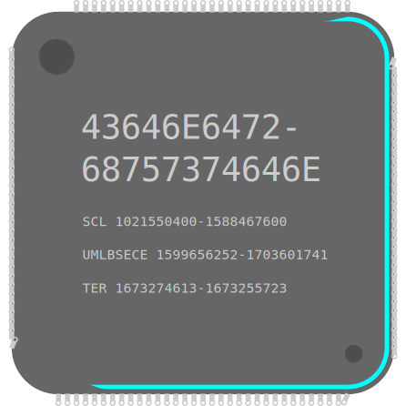

Conor Duston
Software Engineer

About Me:
I am a self motivated entry level software developer looking for jobs that involve programming embedded systems, operating systems, firmware, applications, or websight backends.
I Graduated UMass Lowell December 2023, and have 8 months of experience working as an Applications Engineering Co-Op at Teradyne.
I enjoy learning more about computer software and hardware through practical experience, this page is both an example and contains some of the projects I have created.
Work Experience:
-
|
Applications Engineering Co-Op
Teradyne, 600 Riverpark Dr, North Reading, MA 01864, United States
January 9nth, 2023 to August 1st, 2023
|
-
Ensured product quality by diagnosing, triaging, and cataloging issues with products through collaboration within the QA team and with other departments.
-
Decreased time products spent in QA before release through the automation of regression tests with the creation, use, and maintenance of C# and C++ applications and scripts
-
Smoothed transitions between project leads and increased productivity through thoroughly documenting regression test procedures and how to use tools
|
-
|
Bycicle Mechanic
Dick's Sporting Goods, 1500 S Willow St, Manchester, NH 03103, United States
July 20th, 2021 to November 17th, 2022
|
-
Sold bicycles and maintenance packages by assembling and and repairing bicycles in a timely and professional manner
-
Directed customers to in-store products and maintained store readiness by helping other departments as needed
|
Current Projects:
Prior Projects:
Work Projects:
- Teradyne Applications Engineering Co- Op:
Created GUI and CLI application to automate interaction with test software
Scripted tasks on an as - needded basis
Learned about C#, Object Oriented Design, C++, and regression testing
School Projects:
-
Capstone Project:
Created Java application to assist stroke recovery patients conduct at home medical care
Used Android Studio to create application and GUI for application
Worked with 3rd party API to access sensors (MBIENTLABS)
Learned about Java, Android Application Development, 3rd party API integration
-
DuckieBot Project:
Programmed DuckieBot to follow lanes around a track using a camera
Used ROS with Python to program the DuckieBot, made a PID loop to keep the bot on track, used OpenCV for image processing to find the track
Deployed code to DuckieBot using Docker
Learned about Robotic Programming, autonomous vehicles, embedded systems, and image processing
-
Various Other Projects:
Created a mock up of the memory manager for Operating Systems class
Created circuits that used various features of the Arduino like timer interrupts, I2C interfaces, and PWM in Embedded Systems
Programmed a network protocol of increasing complexity to deal with simulated loss and corruption for Network Design
Programmed an De-10 Lite board to do tasks such as create and display Julia-Fatou and Mandelbrot sets
created pipelines for data processing, and utilized grey code to cross clock domains in Advanced Digital Design
Git Homepage:
Conor Duston's Git Page